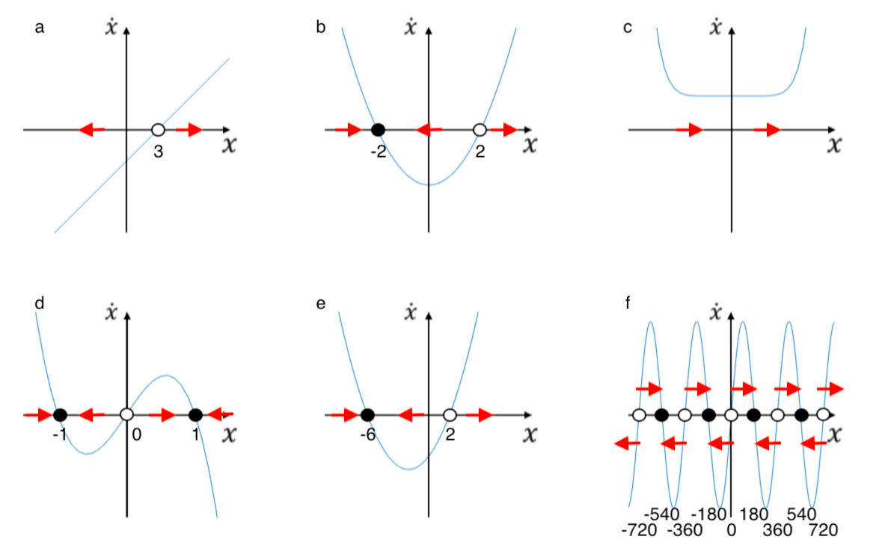
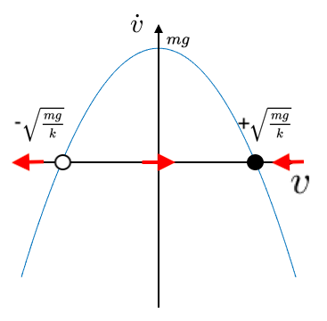

We can work out the steady states by calculating \(\dot x = 0\), and we can work out the stability by drawing it (plots below answers)
(a) \(3x-9 = 0 \rightarrow \) steady state at \(x=3\)
(b) \(4x^2-16 = 0 \rightarrow \) steady states at \(x=\pm 2\).
(c) \(x^8+10 =0 \rightarrow x^8=-10 \). This has no solution, as \(x^8\) is always positive. No steady states (always goes to \(+ \infty\)).
(d) \(x-x^3 = 0 \rightarrow \) steady states at \(x=-1,0,1\).
(e) \(x^2+4x-12 = (x+6)(x-2) = 0 \rightarrow \) steady states at \(x=-6,2\).
(f) \(\sin(x) = 0 \rightarrow\) steady states are at \(x = n \times 180^{\circ} \) where \(n = 0,\pm 1,\pm 2, \pm 3, \ldots\)
(a) Terminal velocity is when the velocity is constant, so \(\dot v = 0\). Therefore from a dynamical systems perspective, terminal velocity is a steady state. To calculate terminal velocity, we use \(\dot v = mg-kv^2 = 0 \rightarrow mg=kv^2 \rightarrow v=\pm \sqrt {mg\over k}\). Since \(v\) is positive at terminal velocity (the falling person isn't falling upwards!), we know the positive choice is terminal velocity.
(b) The plot of the dynamical system is below. If the skydiver's velocity is above terminal velocity, they slow down to terminal velocity. If it is below terminal velocity (or negative - they are going upwards) they will accelerate downwards to terminal velocity. If their velocity is very negative (more than negative terminal velocity), they are going upward so fast they will escape Earth's gravity!
(c) Since terminal velocity is proportional to \(1/\sqrt{k}\), if \(k\) gets larger terminal velocity gets smaller, and vice versa. The plot for large \(k\) is like the one in the previous question but narrower (so the steady states are closer to zero), whilst small \(k\) is wider.
(d) Opening the parachute decreases terminal velocity. Since \(m\) and \(g\) are mass and strength of gravity, they do not change when the parachute is opened. Therefore for terminal velocity to decrease, \(k\) must increase. This is because air resistance increases when the parachute is opened.